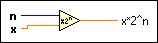

Scale By Power Of 2 Function
Owning Palette: Numeric VIs and Functions
Requires: Base Development System
Multiplies x by 2 raised to the power of n.
If x is an integer or fixed-point number, this function is the equivalent of an arithmetic shift. The connector pane displays the default data types for this polymorphic function.

 Add to the block diagram Add to the block diagram |
 Find on the palette Find on the palette |